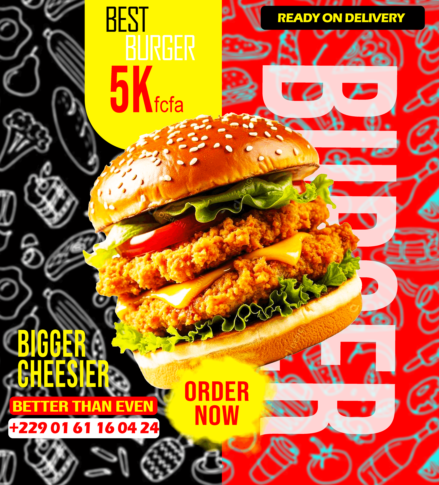
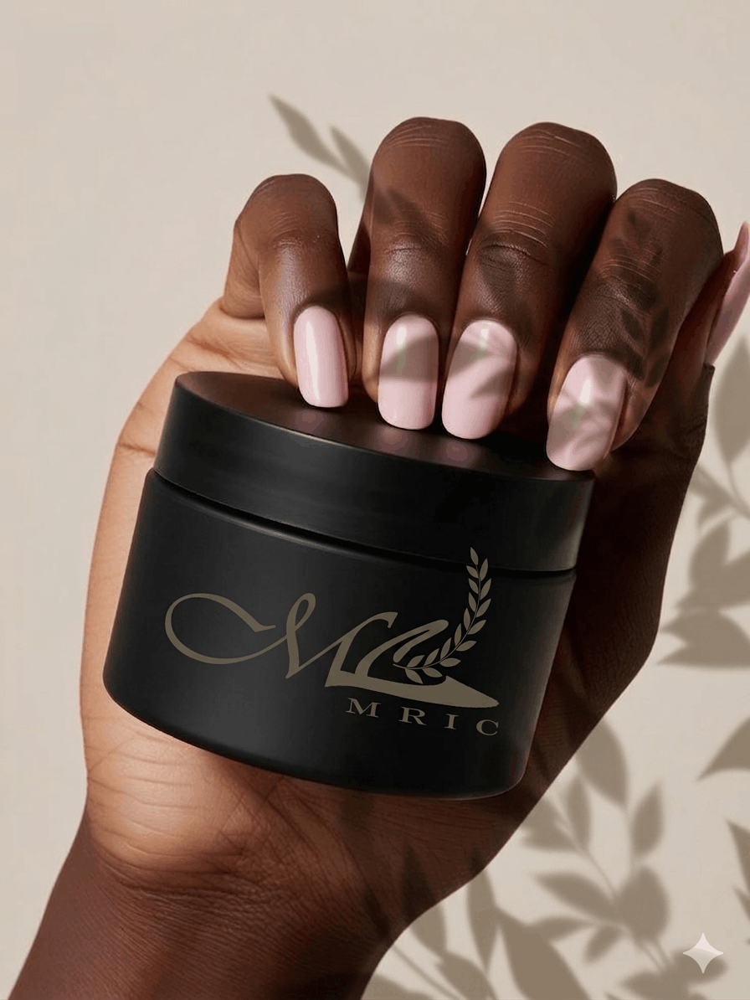
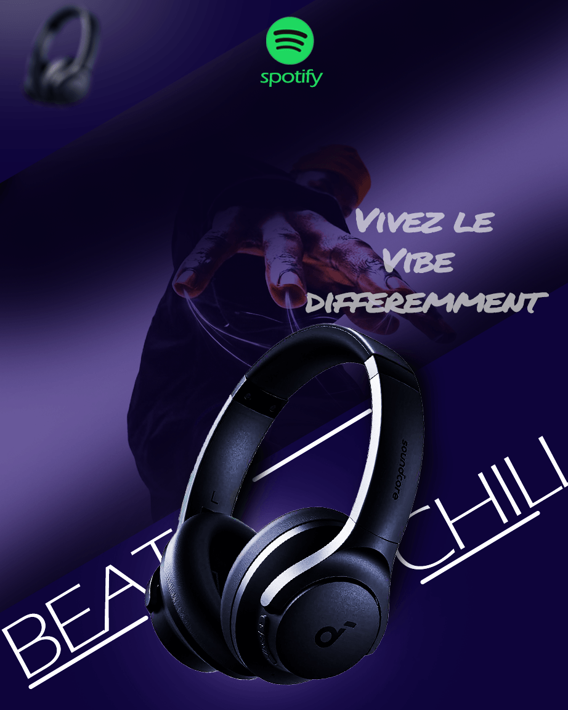
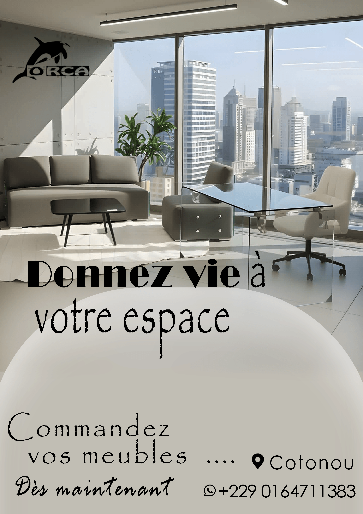
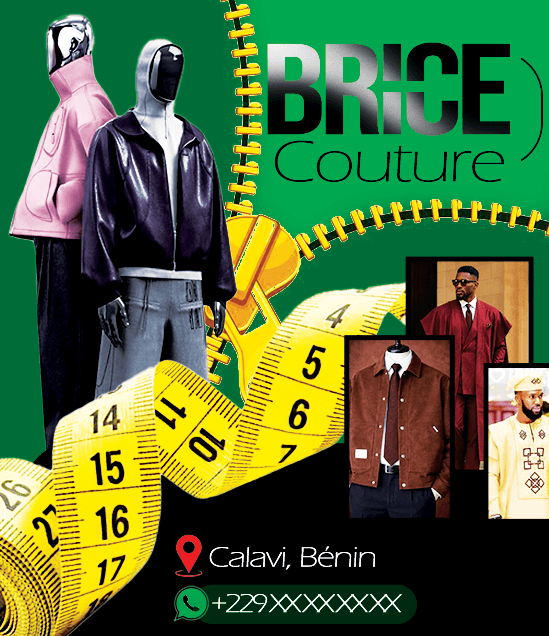
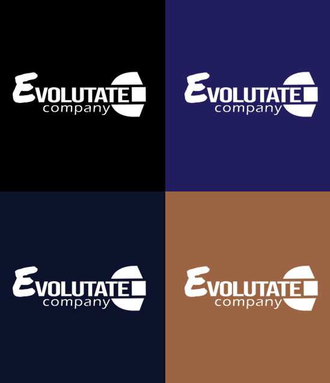

Retour aux volumes
Volume 01
Graphisme& Design
Identités visuelles, logos, flyers et branding — chaque projet
est pensé comme une signature. Mon approche : comprendre la marque
avant de la dessiner.
Tout
Logos
Flyers
Identité visuelle
Marque

Identité visuelle
Ani Délices
2025
Restaurant — Identité & motion design
Création complète de l'identité visuelle pour un restaurant :
logo, palette, typographie, supports print et motion design
publicitaire pour les réseaux sociaux.
Voir sur Behance
Marque
Seven — Marque
2025
Branding — Marque mode
Conception complète de l'identité de marque Seven : logo,
charte graphique, supports print et déclinaisons digitales
pour une marque de mode moderne.
Voir sur Behance
Flyer
Flyer Anniversaire
2024
Flyer — Événement personnel
Création de flyers événementiels personnalisés, avec une
direction artistique élégante et moderne. Format print et digital.
Voir sur Behance

Identité visuelle
MRIC
2025
Identité — Produits esthétiques
Création de l'identité visuelle d'une gamme de produits
esthétiques : logo, packaging, supports de communication
et direction artistique.
Voir sur Behance
CIVO — Montre
2024
Visuel — Marque de montres
Création de visuels publicitaires haut de gamme pour une marque
de montres. Retouche produit, mise en scène et direction artistique.
Voir sur Behance
Flyer
Barber — Flyer
2024
Flyer — Salon de coiffure
Design de flyers promotionnels pour un salon de coiffure.
Style urbain, typographie forte et mise en avant des services.
Voir sur Behance
Marque
Château Margaux
2025
Publicité — Maison de vin
Création d'un visuel publicitaire premium pour une marque de vin
prestigieuse. Composition élégante et direction artistique haut de gamme.
Voir sur Behance

Identité visuelle
Beat — UI Design
2025
UI / UX — Application musicale
Conception d'interfaces pour une application musicale. Design system,
wireframes, prototypes interactifs et déclinaisons mobiles.
Voir sur Behance

Identité visuelle
Dashboard Analytics
2024
UI — Interface de données
Design d'un dashboard analytique moderne. Hiérarchisation de la
donnée, visualisations claires et expérience utilisateur optimisée.
Voir sur Behance
Lion Fort
2024
Identité — Marque énergique
Conception d'une identité de marque forte et impactante.
Univers graphique affirmé, symbole puissant et déclinaisons.
Voir sur Behance

Identité visuelle
E-commerce Couture
2025
Design — Boutique en ligne
Direction artistique pour une boutique en ligne de haute couture.
Univers élégant, mise en scène produit et expérience immersive.
Voir sur Behance

Identité visuelle
Studio Dashboard
2024
UI Design — Interface créative
Refonte d'une interface de gestion pour studio créatif. Design
épuré, expérience fluide et identité visuelle cohérente.
Voir sur Behance
Aucun projet dans cette catégorie pour le moment.